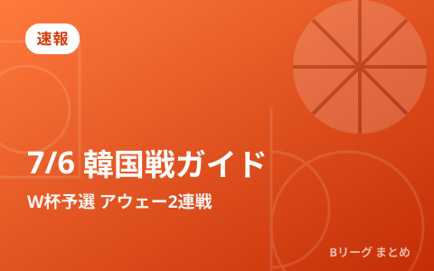
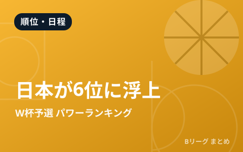
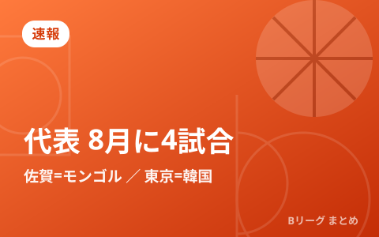
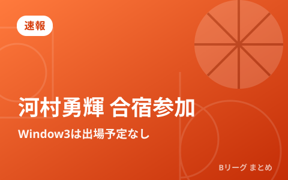

速報

速報
FIBAがW杯アジア予選「注目の10選手」を発表 日本代表から富永啓生が選出

速報
7月6日 日本代表vs韓国戦 視聴ガイド W杯予選Window3アウェー2連戦の見方

速報
FIBAがW杯アジア予選の最新パワーランキングを発表 日本は6位に浮上

速報
男子日本代表、8月に国際試合4試合を開催へ 佐賀でモンゴル・東京で韓国と対戦

速報
河村勇輝が日本代表・第2次強化合宿に参加 7月のW杯予選Window3は出場予定なし

速報
男子日本代表、W杯予選Window3へ第2次強化合宿の23名を発表 7月に中国・韓国とアウェー2連戦
このカテゴリは1日3回を目安に最新ニュースを追加しています。